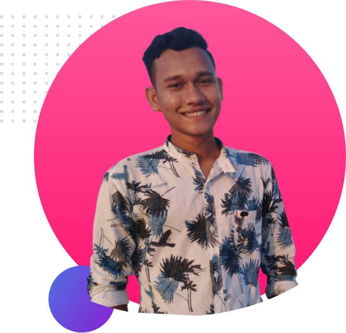
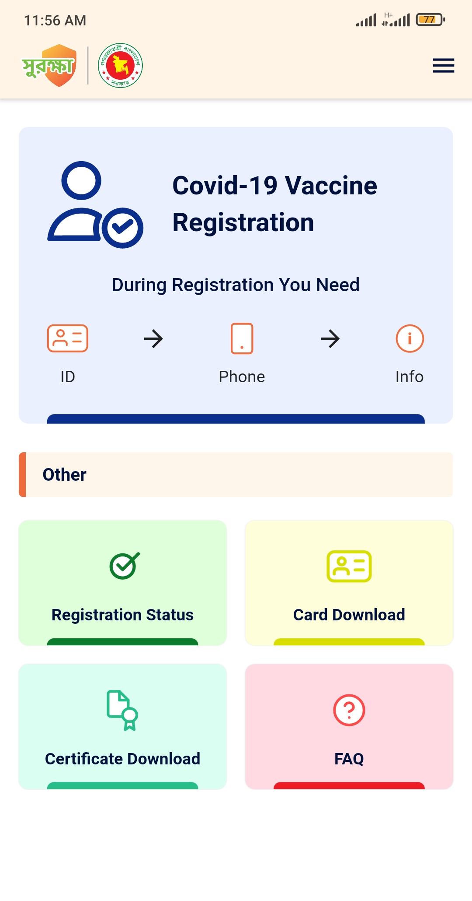

This year I will become a junior web developer and finish my academic studies with it. Within this year,
I will work hard without compromising to become a full-fledged programmer. At the end of learning I will
try to give all my friends ideas about programming.
Scroll down to explore more about us

My Mission in 2022
Mission
I will become a junior web developer and finish my academic studies with it.
Vission
Within this year, I will work hard without compromising to become a full-fledged programmer.
Goals
At the end of learning I will try to give all my friends ideas about programming.
Develop
Without limits
Who doesn't know the feeling: You are enthusiastic about something and try with all your might to achieve
the best results for your hearts concern. But what if your „might“ is limited?
The story of destination:development is a success story. This is why I, Kerstin, would like to talk
quite openly today about limitations we are facing - just as any other young organisation does.
All beginnings are difficult, so they say, but I don't quite agree. The beginning of every new project
is charmed by the energy of new beginnings. You dream big, infect others with your ideas and find
committed supporters. In order to get that far, you have already learned a lot and deserve to enjoy this
exciting phase. However, the magic of new beginnings doesn't last forever, and this is, when beginnings
start getting difficult.
Know our
Global Community
Your choice of programming communities (know as discussion boards, forums, bulletin boards, etc.) will
often determine the pace of your progression in your particular language that you’re learning. I don't
think there is an answer as to why, but real-time communities provide a one of a kind learning
experience. Communities like the ones in our chart provide “room” for asking the right questions, and
more often than not, people will be eager to help you, offer advice and different perspectives on how to
tackle your bugs. The key element to these communities is to research your questions before you ask
them!
Build VaccineApplication

Stay safe with
Take Vaccine
The App is part of a service designed to register to the Covid-19 Vaccine Management System “Surokkha”.
When the App is installed on your mobile or handheld device, you will be able to register to the
Covid-19 Vaccine Management System “Surokkha” and be able to get other services as well. These data
would be shared with the ICT Division and DGHS on behalf of the government of Bangladesh to only access
personal and sensitive data required to directly support the public health emergency, and may only use
the data collected to support COVID-19-related efforts or epidemiological research.